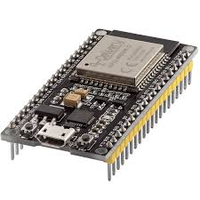
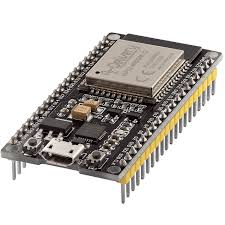

Sistema de Riego Con IoT
El propósito de nuestro proyecto es minimizar y ayudar a solucionar los problemas que existen en jardines domésticos o en cultivos agroindustriales,
por medio de un dispositivo tecnológico; el cual nos facilitara los procesos técnicos para la satisfacción de dicho proyecto;
en este caso los jardines domésticos tendrán un riego automatizado para la hidratación de dicho problema.
Descripción del proyecto
Como proyecto contamos con la automatización de riego de plantas domésticas, será resuelto mediante una programación la cual estará en cargada desde la placa de desarrollo ESP32,
ya que este dispositivo nos permite flexibilidad de manejo en programación y eficiencia para realizar los códigos para el funcionamiento del proyecto. Las plantas estarán monitoreadas mediante un sensor de humedad Yl-69, el cual nos proporcionara datos que nos permitirán reconocer si la planta está totalmente seca o hidratada. Además tendremos un mecanismo el cual será manejado por una minibomba que va a permitir el paso o el flujo de agua para el tanque principal,donde se contará con un sensor de nivel de agua, cuya función es obtener el nivel máximo de llenado para no sufrir derrames, ya que esta situación puede generar consecuencias en las residencias.

 

Restricciones del proyecto
• El sistema está pensado ser diseñado principalmente para jardines domésticos y huertos de pequeña escala, no para grandes extensiones de terreno.
• Los sensores utilizados están limitados por su precisión y cobertura en áreas pequeñas,
por lo que no serían adecuados para monitorear terrenos amplios.
• El sistema está diseñado para usar bombas sumergibles de bajo caudal,
lo que restringe su capacidad para riego en áreas que requieren
un volumen de agua considerable o presión de agua alta.
Objetivo general
• Desarrollar e implementar un sistema de riego automático para cultivos y jardines domésticos,
utilizando tecnología de bajo costo con el fin de optimizar el uso de agua y minimizar
el esfuerzo humano garantizando la hidratación adecuada de las plantas.
Objetivos especificos
• Diseñar un sistema de control basado en Arduino que integre sensores de humedad del suelo
y temperatura para monitorear las condiciones de las plantas.
• Promover el uso eficiente del agua en los huertos y jardines domésticos,
reduciendo el desperdicio y optimizando el consumo mediante
la automatización del riego.
• Crear un prototipo escalable que pueda adaptarse a diferentes tamaños de jardines y tipos de cultivos domésticos.
• Jardineros Aficionados
• Propietarios de jardines grandes
• Familias ocupadas
• Adultos mayores
• Amantes de las flores y plantas
• Inversiones en propiedades de alquiler
Conclusión
Este dispositivo esta diseñado para solucionar las necesidades de las personas que no tienen el tiempo suficiente de ralizar el riego a su planta.